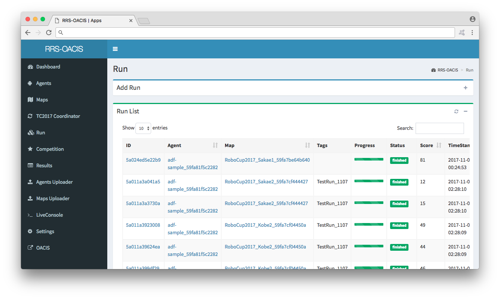

RRS-OACIS (RoboCupRescue Simulation OACIS) is simulation management software for RoboCupRescue simulation．It manages agents (autonomous programs that operate in disaster simulation), maps (geographic data, scenario data), simulation itself, execution results. RRS-OACIS can conduct research and competition using managed data.
(The following images can be enlarged)
This document explains how to simulate using RRS-OACIS, the configuration is as follows.
Install and initialize the server.
After explaining how to upload Agent and Map, I will introduce a simple simulation method using Run App．
It is explanation about various operations
It shows how to add an App